| 참고 : https://github.com/learnsyslab/gym-pybullet-drones, https://wandb.ai/jcy9066_wandb/gym-pybullet-drones-pointreach/workspace?nw=nwuserjcy9066
learn.py
-
PyBullet Drone Hover 환경에서 PPO를 학습시키는 예제
| 참고 : PPO -
환경 생성 → PPO 학습 → 주기적 평가 best model 저장 → 학습된 policy 실행
- 즉, RL 학습 파이프라인을 한 파일에서 보여주는 최소 예제
-
Multiagent
- 한 환경에서 여러 대의 Drone을 동시에 사용할지 선택하는 옵션
DEFAULT_AGENTS = nDEFAULT_MA = {boolean}
-
stable-baselines3 (SB3)
- Python용 RL 알고리즘 라이브러리
-
logger
- 학습시뮬레이션 data를 기록하고 나중에 분석하기 위한 도구
-
hoveraviary
- 목표 위치에서 hovering하도록 학습하는 RL 환경
-
ObservationType
kin- kinematic state를 observation으로 사용
ex) position, pose, linearangular velocity
- kinematic state를 observation으로 사용
rgb- camera의 RGB 이미지를 observation으로 사용
-
ActionType
rpm: 4개 모터의 RPM을 각각 조절pid: goal position을 주고, PID가 RPM 계산
| 참고 : PIDvel: goal velocity를 주고, PID가 RPM 계산one_d_rpm: 값 1개로 4개 모터 RPM을 동일하게 조절one_d_pid: 값 1개로 z축 목표 위치만 조절
-
train_env
- Data 수집 및 Policy를 업데이트하는 학습용 환경
-
eval_env
- Policy 성능을 별도로 측정하는 평가용 환경
-
test_env
- 최종 성능 테스트
-
**model = PPO({policy_name}, {env}, {verbose})
- PPO 알고리즘 사용
policy_name: 사용할 networkenv: 학습 환경
ex) trainverbose→ 1 : 학습 로그 출력
-
target_reward = {n}
- 학습 성능이 충분히 좋아졌다고 판단할 기준 reward
- single-agent와 multi-agent에 따라 기준값이 다름
- ∵ 각 drone reward의 총합 reward를 사용하므로
- action type에 따라 기준값이 다름
- reward 설정 기준
- 환경의 이론적 최대 reward
- task 성공 조건 기준
- baseline 성능 기준
- 여러 실험을 통한 threshold
-
callback_on_best
- 평가 reward가 target_reward를 넘으면 학습 종료
eval_callback: 새로운 최고 성능이 나오면 실행
-
일정 간격 Eval
eval_callback = EvalCallback(
eval_env, # 별도의 평가 환경에서 실행
eval_freq=1000, # 1000 step마다 Eval
deterministic=True, # 탐색 없이 현재 Policy 기준 평가
best_model_save_path=filename+'/',
log_path=filename+'/'
)- 학습
model.learn(
total_timesteps=int(1e7), # 최대 step 수
callback=eval_callback, # 학습 중 주기적 평가
log_interval=100 # 일정 간격으로 log 출력
)- 최종 test
mean_reward, std_reward = evaluate_policy(
model,
test_env_nogui,
n_eval_episodes=10 # 10개 episode에서 test해, 평균 reward와 표준편차 계산
)training 중 Evaluation Reward Graph
- 단일 Agent
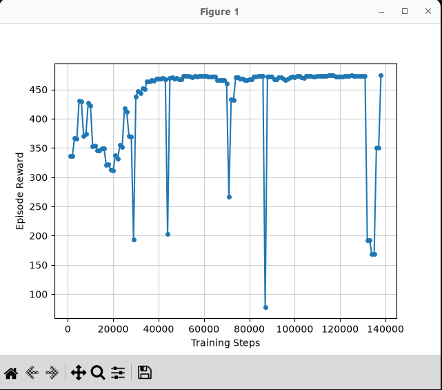
- 가끔 나오는 낮은 reward는, 일시적으로 policy가 불안정해져 평가 episode가 실패한 경우
- learning rate, PPO clip_range, batch size 등을 조정하거나, Eval episode 수를 늘려 평균 reward로 평가해 보완할 수 있음
- 재현성과 안정성이 중요한 경우, 원인을 확인해야 함
best model simulation
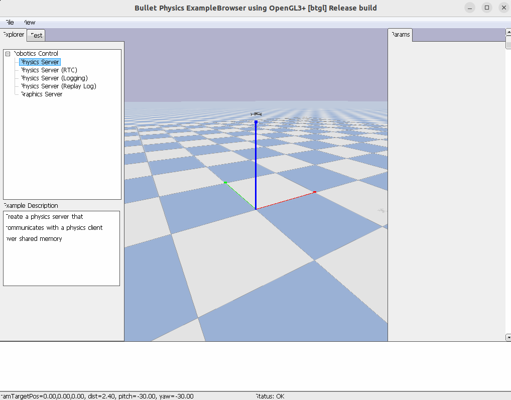
-
best model로 수행하는 최종 test 시뮬레이션
test Graph
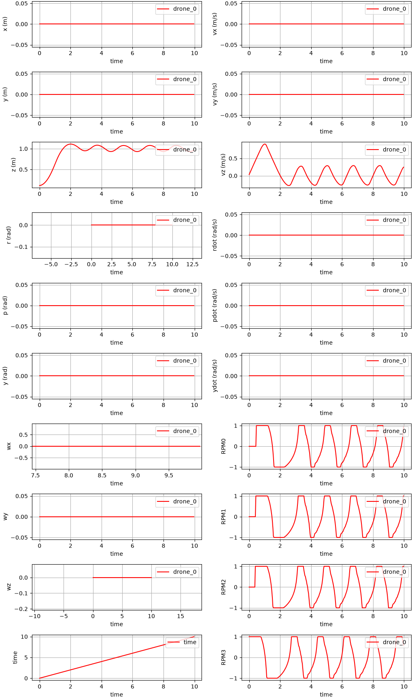
| Left | Right | |
|---|---|---|
| 1 | x (m) | vx (m/s) |
| 2 | y (m) | vy (m/s) |
| 3 | z (m) | vz (m/s) |
| 4 | r (rad) = Roll | rdot (rad/s) |
| 5 | p (rad) = Pitch | pdot (rad/s) |
| 6 | y (rad) = Yaw | ydot (rad/s) |
| 7 | wx | RPM0 |
| 8 | wy | RPM1 |
| 9 | wz | RPM2 |
| 10 | time | RPM3 |
- RPM은 시간에 따른 추력 상승하향 명령값
training 중 reward Graph
- Multi-agent
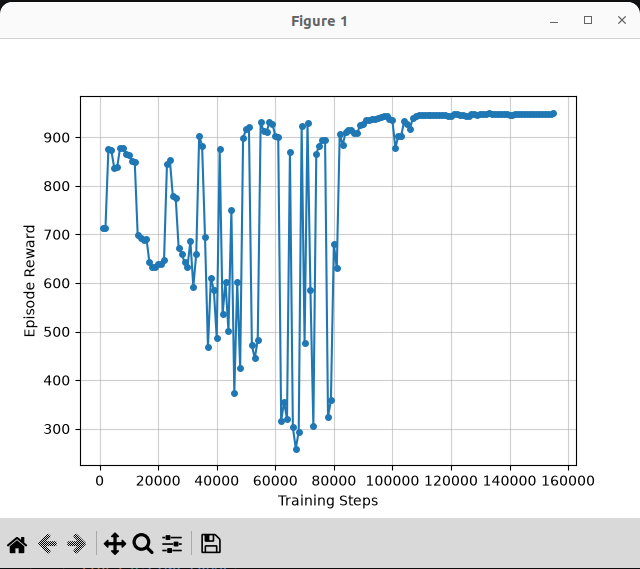
test Graph
- Multi-agent
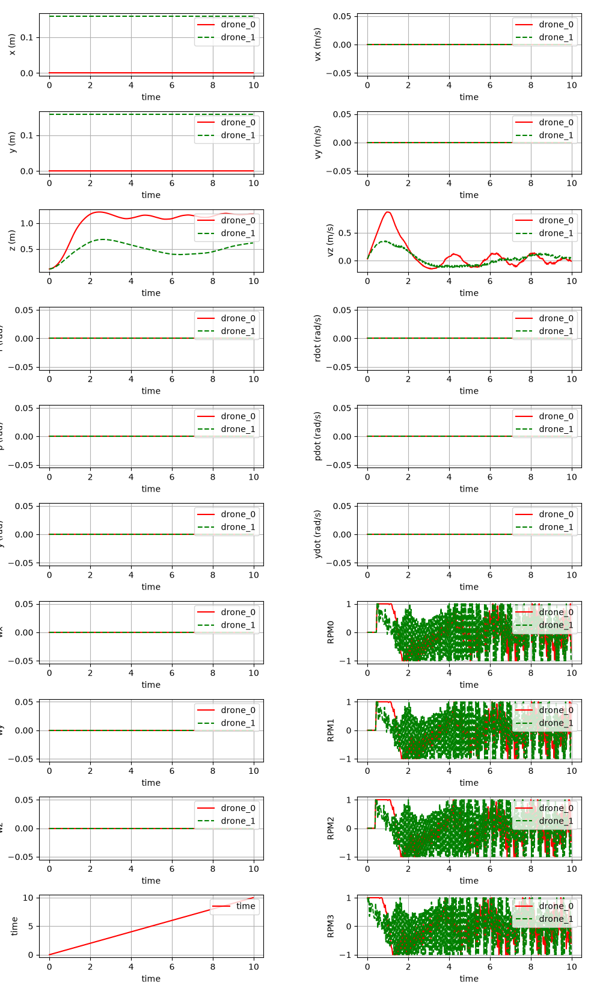
HoverAviary
-
Hover RL 문제 정의
- 즉, Agent가 어떤 문제를 풀어야 하는지 정의한 파일
-
Goal Position, Reward, 성공실패 조건, 실패시간 초과 조건 구현
-
init
self.TARGET_POS: 목표 위치self.EPISODE_LEN_SEC: episode 길이
-
_computeReward()
- 현재 position과 goal position 사이 거리로 reward 계산
def _computeReward(self):
state = self._getDroneStateVector(0)
ret = max(0, 2 - np.linalg.norm(self.TARGET_POS-state[0:3])**4)
return ret- _computeTerminated()
- episode terminated condition
- goal position에 도달하면 episode를 성공으로 종료
def _computeTerminated(self):
state = self._getDroneStateVector(0)
if np.linalg.norm(self.TARGET_POS-state[0:3]) < .0001:
return True
else:
return False- _computeTruncated()
- 실패 조건이나, 시간 제한으로 중단되는 종료 조건
def _computeTruncated(self):
state = self._getDroneStateVector(0)
if (abs(state[0]) > 1.5 or abs(state[1]) > 1.5 or state[2] > 2.0
or abs(state[7]) > .4 or abs(state[8]) > .4
):
return True
if self.step_counter/self.PYB_FREQ > self.EPISODE_LEN_SEC:
return True
else:
return False- _computeInfo()
- 환경이 Agent에게 observation, reward, 종료 여부 외의 추가적인 진단분석 정보를 전달하기 위한 dictionary
def _computeInfo(self):
return {"answer": 42}BaseRLAviary.py
-
여러 RL Task가 공통으로 사용하는 기반 class
-
init
-
self.ACTION_BUFFER_SIZE: action buffer. observation에 최근 action history를 포함시키기 위함
→ 최근 제어 명령도 확인 후 판단 -
self.OBS_TYPE = obs: 현재 observation 방식 저장.
ex) KIN, RGB -
self.ACT_TYPE = act: action을 어떤 의미로 해석할지 -
self.ctrl- drone마다 PID Controller를 하나씩 생성
| 참고 : PID
- drone마다 PID Controller를 하나씩 생성
-
SPEED_LIMIT- velocity action용 최대 속도 설정
- Action 범위를 현실적이고 안정적인 수준으로 제한하기 위함
-
-
_actionSpace()
- Agent가 출력할 Action의 차원과 허용 범위를 정의
self.ACT_TYPE- Action 범위를 정규화된 범위로 사용함
→ 여기선 [-1, 1]
-
_observationSpace()
- Agent가 받는 Observation의 형태와 값 범위를 정의하는 함수
kin은 기본적으로 12차원 State + Action History 추가
- Agent가 받는 Observation의 형태와 값 범위를 정의하는 함수
-
_computeObs()
- 현재 drone 상태를 읽어 실제 observation verctor를 만들어 변환하는 함수
obs = self._getDroneStateVector(i)
BaseAviary.py
-
RL과 무관한 공통 시뮬레이션 기능
ex) Drone 생성, 물리 시뮬레이션 step, State 업데이트, collisionphysics 처리 등 -
step()
- PPO가 낸 값을, 시뮬레이터가 실제 사용할 수 있는 모터 명령으로 바꾸는 과정
clipped_action = np.reshape(self._preprocessAction(action), (self.NUM_DRONES, 4))-
for _ in range(self.PYB_STEPS_PER_CTRL)
- 실제 physics 시뮬레이션 진행
- 한 번의 RL control step 안에서, physics를 여러 번 돌릴 수 있음
- agent의 control 명령 주기보다, 실제 물체의 움직임을 더 촘촘하게 계산해야 시뮬레이션이 안정적임
-
self._updateAndStoreKinematicInformation()
- physics 계산 후, 변화된 drone의 최신 state를 읽는 단계
-
self.step_counter
- 시뮬레이션 시간이 얼마나 진행되었는지 추적하기 위한 값
self.step_counter = self.step_counter + self.PYB_STEPS_PER_CTRL
-
_physics(self, rmp, nth_drone)
- RPM을 물리적인 힘과 torque로 바꾸는 부분
-
z_torque
z_torque = (-torques[0] + torques[1] - torques[2] + torques[3])- motor 0, 2는 반시계 방향으로 돌기 때문에, -를 붙임
-
p.stepSimulation(physicasClientId=self.CLIENT)
- PyBullet이 State를 갱신하는 단계
- 적용된 힘과 torque를 바탕으로 drone의 다음 물리 state를 계산
-
reset(self, seed, option)
-
Episode 종료 시, 새 Episode 시작 state로 되돌리는 함수
-
p.resetSimulation(physicsClientId=self.CLEINT)- PyBullet simulation 전체 초기화
- 기존 drone물체 state 제거
-
self._housekeeping()- drone 다시 생성
- 초기 positionpose 설정
- step_counter 초기화
- 이전 action state 관련 변수 초기화
-
self._updateAndStoreKinematicInformation()- 초기 drone의 position, velocity, pose 등을 읽어 저장
-
initial_obs = self._computeObs()
initial_info = self._computeInfo()- 새 Episode의 최초 observation과 info 생성
-
-
_housekeeping()
- 초기 변수 State 초기화
self.RESET_TIME = time.time()
self.step_counter = 0
self.first_render_call = True
self.X_AX = -1*np.ones(self.NUM_DRONES)
self.Y_AX = -1*np.ones(self.NUM_DRONES)
self.Z_AX = -1*np.ones(self.NUM_DRONES)
self.GUI_INPUT_TEXT = -1*np.ones(self.NUM_DRONES)
self.USE_GUI_RPM=False
self.last_input_switch = 0
self.last_clipped_action = np.zeros((self.NUM_DRONES, 4))
# drone의 운동 state 초기화
self.pos = np.zeros((self.NUM_DRONES, 3))
self.quat = np.zeros((self.NUM_DRONES, 4))
self.rpy = np.zeros((self.NUM_DRONES, 3))
self.vel = np.zeros((self.NUM_DRONES, 3))
self.ang_v = np.zeros((self.NUM_DRONES, 3))
# PyBullet Physics
p.setGravity(0, 0, -self.G, physicsClientId=self.CLIENT)
p.setRealTimeSimulation(0, physicsClientId=self.CLIENT)
p.setTimeStep(self.PYB_TIMESTEP, physicsClientId=self.CLIENT)
p.setAdditionalSearchPath(pybullet_data.getDataPath(),physicsClientId=self.CLIENT)
# Ground Plane과 Drone 모델 생성
# 새 episode마다 바닥과 drone 재생성, 초기 position과 pose에 배치
self.PLANE_ID = p.loadURDF("plane.urdf", physicsClientId=self.CLIENT)
self.DRONE_IDS = np.array([
p.loadURDF(
str(files('gym_pybullet_drones') / 'assets' / self.URDF),
self.INIT_XYZS[i,:],
p.getQuaternionFromEuler(self.INIT_RPYS[i,:]),
flags = p.URDF_USE_INERTIA_FROM_FILE,
physicsClientId=self.CLIENT
) for i in range(self.NUM_DRONES)
])
# local x, y, z axis 표기, 장애물을 환경에 추가
if self.GUI and self.USER_DEBUG:
for i in range(self.NUM_DRONES):
self._showDroneLocalAxes(i)
if self.OBSTACLES:
self._addObstacles()- _updateAndStoreKinematicInformation()
- 현재 drone state를 읽어서 class 변수에 저장
for i in range(self.NUM_DRONES):
self.pos[i], self.quat[i] = p.getBasePositionAndOrientation(...)
self.rpy[i] = p.getEulerFromQuaternion(self.quat[i])
self.vel[i], self.ang_v[i] = p.getBaseVelocity(...)ppo.py
| 참고 : PPO
-
Stable-Baselines3 내부 PPO
-
train()
- 현재 Policy에 Rollout에서 저장된 Observation과 Action을 다시 넣어서 value, log_prob, entropy를 계산함
value: Critic이 예측한log_prob: 현재 Policy가 action을 선택할 log 확률entropy: Policy의 무작위성 정도
- 현재 Policy에 Rollout에서 저장된 Observation과 Action을 다시 넣어서 value, log_prob, entropy를 계산함
values, log_prob, entropy = self.policy.evaluate_actions(
rollout_data.observations,
actions
)- Advantage 정규화, Policy Ratio 계산
- Advantage를 평균 0, 표준편차 1로 정규화
- PPO 업데이트의 Gradient Scale 안정화
advantages = rollout_data.advantages
if self.normalize_advantage and len(advantages) > 1:
advantages = (advantages - advantages.mean()) / (advantages.std() + 1e-8)
# PPO에서 Policy가 급격하게 변하는 것을 제한하는 ratio
ratio = th.exp(
log_prob - rollout_data.old_log_prob
)- Clipped Surrogate Objective
policy_loss_1 = advantages * ratio
policy_loss_2 = advantages * th.clamp(
ratio,
1 - clip_range,
1 + clip_range
)
policy_loss = -th.min(
policy_loss_1,
policy_loss_2
).mean()- Value Loss
- Actor, Critic 학습
if self.clip_range_vf is None: # value function clipping을 사용하지 않는 경우
values_pred = values
else: # critic도 급격한 변화 제한
values_pred = rollout_data.old_values
+ th.clamp(values - rollout_data.old_values,
-clip_range_vf, clip_range_vf)
value_loss = F.mse_loss(rollout_data.returns, values_pred)- Entropy Loss
- Policy Exploration 정도를 유지하기 위한 항
if entropy is None:
entropy_loss = -th.mean(-log_prob)
else:
entropy_loss = -th.mean(entropy)- KL Divergence
| 참고 : KL Divergence- KL Divergence를 이용한 과도한 Policy 업데이트 감시
with th.no_grad():
log_ratio = log_prob - rollout_data.old_log_prob
approx_kl_div = th.mean((th.exp(log_ratio) - 1) - log_ratio).cpu().numpy()
approx_kl_divs.append(approx_kl_div)- Gradient 계산, Parameter 업데이트
self.policy.optimizer.zero_grad()
loss.backward()
th.nn.utils.clip_grad_norm_( #gradient exploding 방지
self.policy.parameters(),
self.max_grad_norm
)
self.policy.optimizer.step()on_policy_algorithm.py
- model.learn()
- Rollout 수집과 PPO 학습
while self.num_timesteps < total_timesteps:
continue_training = self.collect_rollouts(
self.env,
callback,
self.rollout_buffer,
n_rollout_steps=self.n_steps
)
if not continue_training:
break
iteration += 1
self._update_current_progress_remaining(
self.num_timesteps,
total_timesteps
)
self.train()- action 생성 및 agent가 action 수행
with th.no_grad(): # Exploration 수집이므로, gradient 계산 X
obs_tensor = obs_as_tensor(self._last_obs, self.device) # tensor로 변환
actions, values, log_probs = self.policy(obs_tensor) # policy가 각각 계산
actions = actions.cpu().numpy()- buffer에 저장
- Transition 정보를 Rollout Buffer에 저장
rollout_buffer.add(
self._last_obs,
actions,
rewards,
self._last_episode_starts,
values,
log_probs,
)Buffers.py
- compute_returns_and_advantage()
- GAE Advantage와 Return 계산
| 참고 : GAE
- GAE Advantage와 Return 계산
last_gae_lam = 0
for step in reversed(range(self.buffer_size)):
if step == self.buffer_size - 1:
next_non_terminal = 1.0 - dones.astype(np.float32)
next_values = last_values
else:
next_non_terminal = 1.0 - self.episode_starts[step + 1]
next_values = self.values[step + 1]
delta = self.rewards[step] + self.gamma * next_values * next_non_terminal - self.values[step]
last_gae_lam = delta + self.gamma * self.gae_lambda * next_non_terminal * last_gae_lam
self.advantages[step] = last_gae_lamPointReach baseline
-
기존 task에서 waypoint 위치 변경
-
각 moter 따로 제어
ONE_D_RPM→RPM -
Single-Agent
-
시드 고정 → 0
-
Failure
-
한계
- Task 난이도 상승
- Reward의 정보 부족
- 어떻게 가야하는지에 대한 정보가 부족함
- 조기 종료 threshold를 수정하지 않음
| Category | Parameter | Current Value |
|---|---|---|
| Task | Target | (0.5, 0.5, 1.0) |
| Environment | Observation | KIN |
| Action | RPM | |
| Reward | Function | |
| PPO | Policy | MlpPolicy |
| Learning Rate | 3e-4 | |
n_steps | 2048 | |
| Batch Size | 64 | |
n_epochs | 10 | |
gamma | 0.99 | |
gae_lambda | 0.95 | |
clip_range | 0.2 | |
ent_coef | 0.0 | |
vf_coef | 0.5 | |
| Training | Total Timesteps | 1e6 |
| Eval Frequency | 1000 steps |
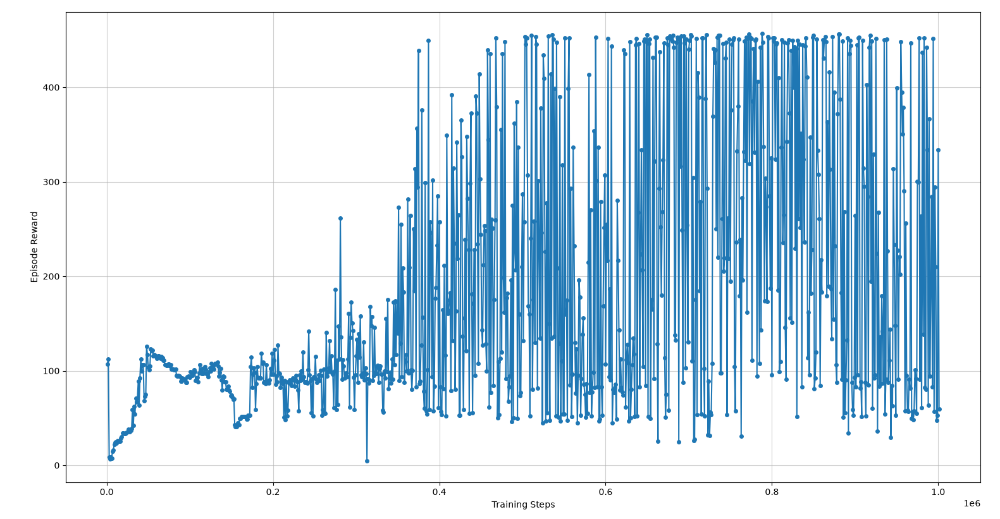
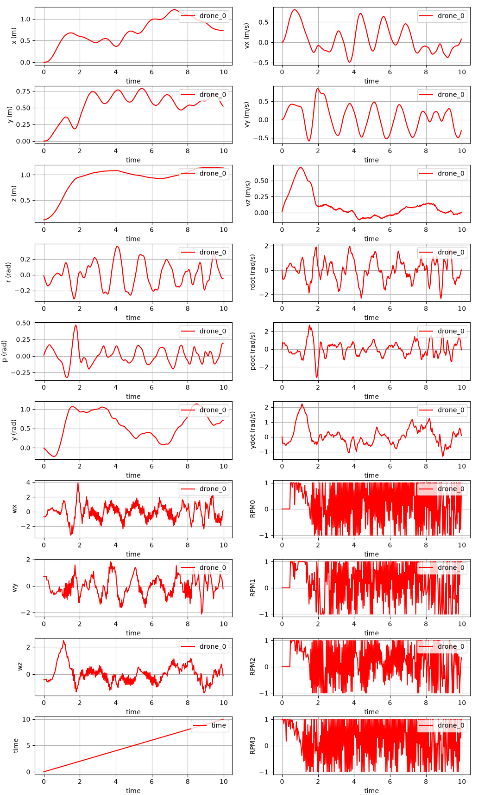
Reward 수정
-
→ -
Failure
-
한계
- 너무 복잡한 reward
| Category | Parameter | Current Value |
|---|---|---|
| Task | Target | (0.5, 0.5, 1.0) |
| Environment | Observation | KIN |
| Action | RPM | |
| *Reward* | Function | |
| PPO | Policy | MlpPolicy |
| Learning Rate | 3e-4 | |
n_steps | 2048 | |
| Batch Size | 64 | |
n_epochs | 10 | |
gamma | 0.99 | |
gae_lambda | 0.95 | |
clip_range | 0.2 | |
ent_coef | 0.0 | |
vf_coef | 0.5 | |
| Training | Total Timesteps | 1e7 |
| Eval Frequency | 1000 steps | |
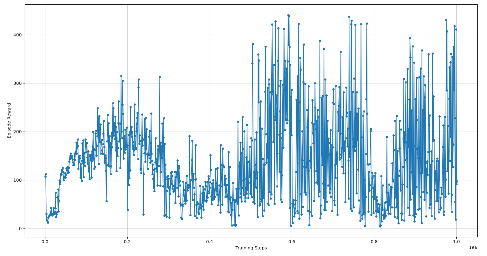 | ||
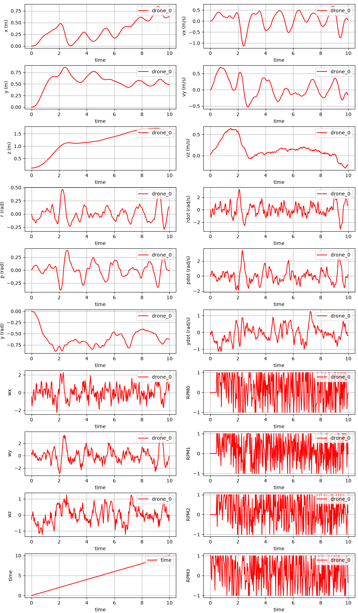 | ||
Learning Rate 수정
-
3e-4 → 1e-3
-
Failure
-
한계
- LR가 너무 커 학습이 불안정해짐
→ drone이 뒤집혀서 급가속해 땅에 부딪힘
- LR가 너무 커 학습이 불안정해짐
| Category | Parameter | Current Value |
|---|---|---|
| Task | Target | (0.5, 0.5, 1.0) |
| Environment | Observation | KIN |
| Action | RPM | |
| Reward | Function | |
| PPO | Policy | MlpPolicy |
| Learning Rate | 1e-3 | |
n_steps | 2048 | |
| Batch Size | 64 | |
n_epochs | 10 | |
gamma | 0.99 | |
gae_lambda | 0.95 | |
clip_range | 0.2 | |
ent_coef | 0.0 | |
vf_coef | 0.5 | |
| Training | Total Timesteps | 1e6 |
| Eval Frequency | 1000 steps |
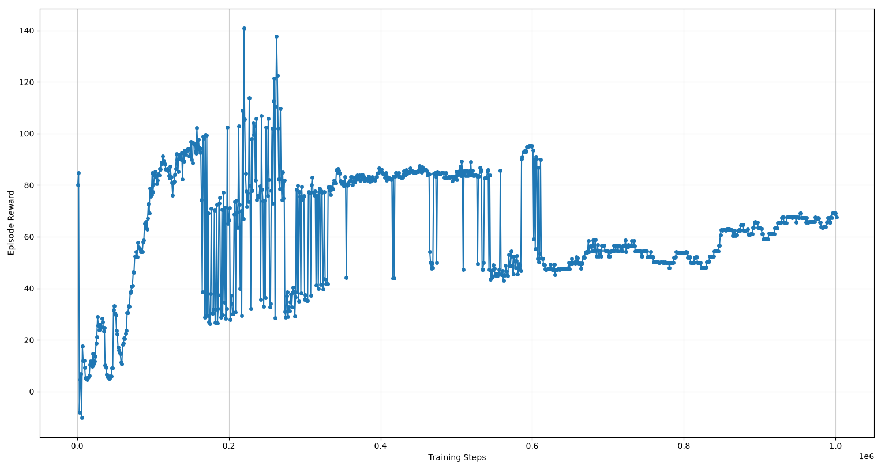
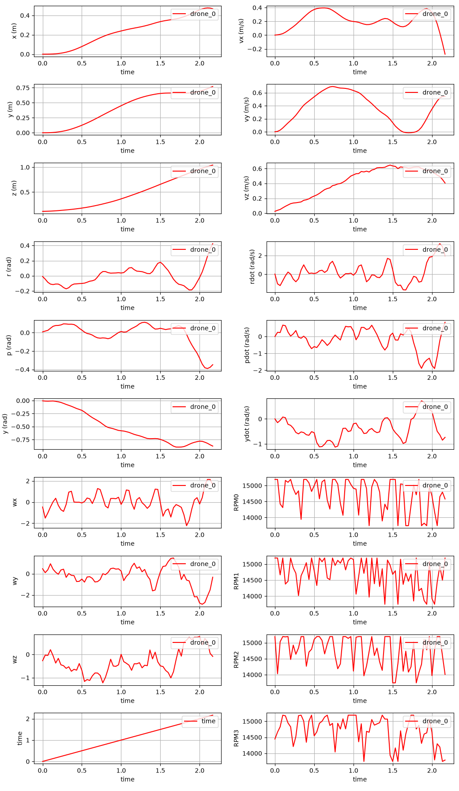
Batch size
-
64 → 128
-
Failure
-
한계
- Batch size 증가로, 한 rollout 당 parameter update 횟수가 감소해 충분한 학습이 진행되지 않았을 수 있음
| Category | Parameter | Current Value |
|---|---|---|
| Task | Target | (0.5, 0.5, 1.0) |
| Environment | Observation | KIN |
| Action | RPM | |
| Reward | Function | |
| PPO | Policy | MlpPolicy |
| Learning Rate | 3e-4 | |
n_steps | 2048 | |
| Batch Size | 128 | |
n_epochs | 10 | |
gamma | 0.99 | |
gae_lambda | 0.95 | |
clip_range | 0.2 | |
ent_coef | 0.0 | |
vf_coef | 0.5 | |
| Training | Total Timesteps | 1e6 |
| Eval Frequency | 1000 steps | |
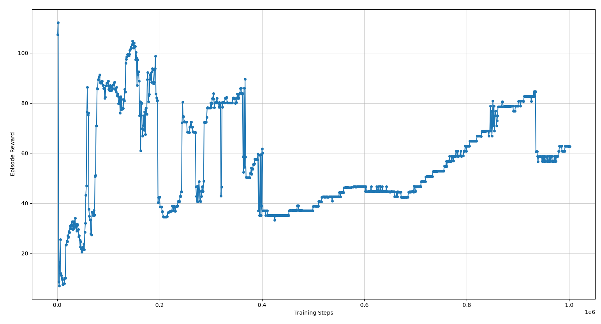 | ||
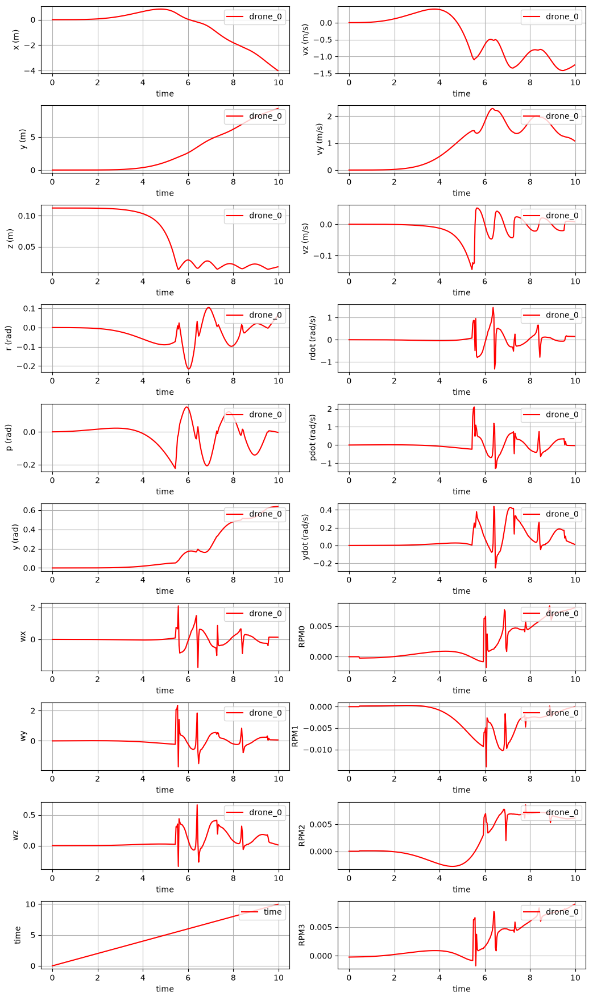 |
Clip Range
-
0.2 → 0.1
-
Success
-
이유
- 급격한 policy 업데이트를 방지해, Success Rate가 증가함
-
한계
- Mean Success Step이 증가해 성공률은 높아졌으나, goal 도달 속도는 느려짐
| Category | Parameter | Current Value |
|---|---|---|
| Task | Target | (0.5, 0.5, 1.0) |
| Environment | Observation | KIN |
| Action | RPM | |
| Reward | Function | |
| PPO | Policy | MlpPolicy |
| Learning Rate | 3e-4 | |
n_steps | 2048 | |
| Batch Size | 64 | |
n_epochs | 10 | |
gamma | 0.99 | |
gae_lambda | 0.95 | |
clip_range | 0.1 | |
ent_coef | 0.0 | |
vf_coef | 0.5 | |
| Training | Total Timesteps | 1e6 |
| Eval Frequency | 1000 steps | |
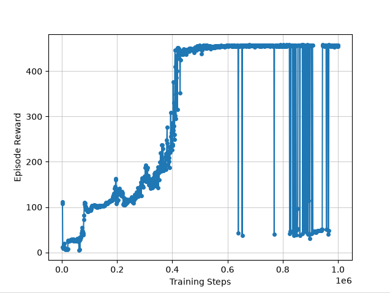 | ||
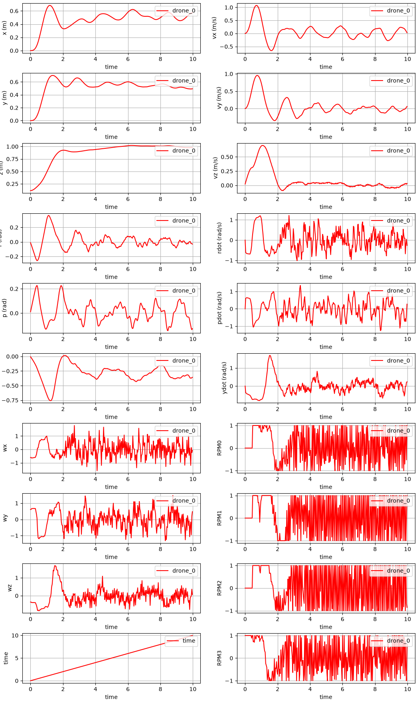 | ||
SAC
| 참고 : Actor-Critic > Soft Actor-Critic
-
PPO → SAC
-
Failure
-
한계
- SAC에 따른 타 hyperparameter를 조정하지 않아 Policy 자체를 제대로 학습하지 못함
| Category | Parameter | Current Value |
|---|---|---|
| Task | Target | (0.5, 0.5, 1.0) |
| Environment | Observation | KIN |
| Action | RPM | |
| Reward | Function | |
| SAC | Policy | MlpPolicy |
| Learning Rate | 3e-4 | |
n_steps | 2048 | |
| Batch Size | 64 | |
n_epochs | 10 | |
gamma | 0.99 | |
gae_lambda | 0.95 | |
clip_range | 0.2 | |
ent_coef | 0.0 | |
vf_coef | 0.5 | |
| Training | Total Timesteps | 1e6 |
| Eval Frequency | 1000 steps | |
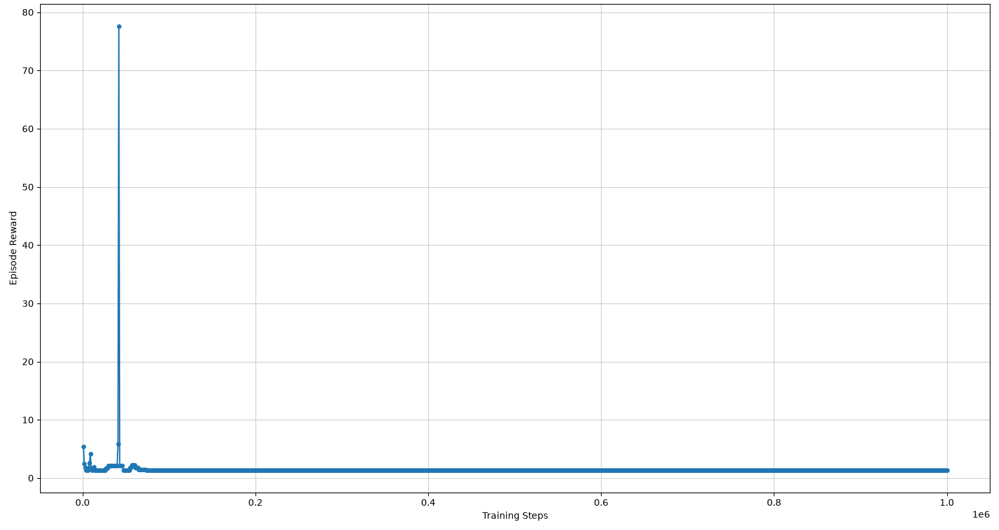 | ||
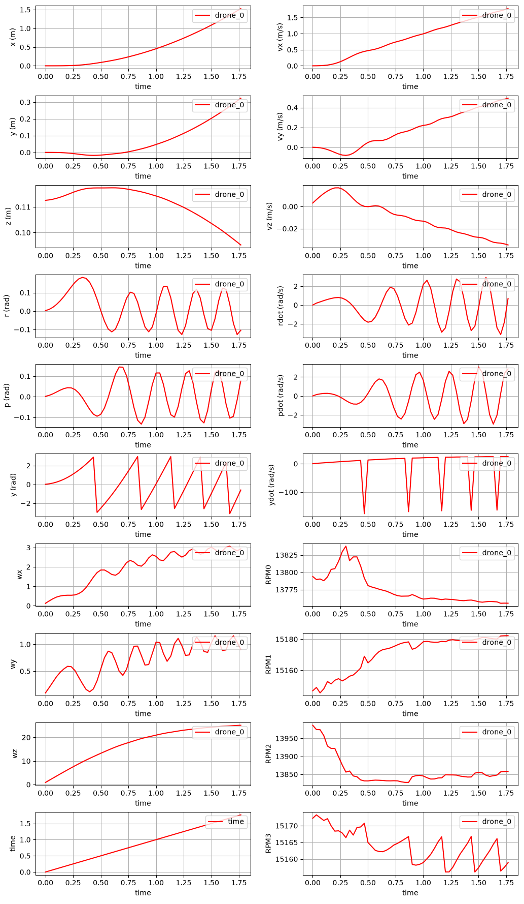 | ||
Goal-relative Observation
-
현재 위치 기준, goal의 상대 위치를 Observation에 추가
-
Success
-
이유
- goal까지 방향과 거리를 직접 observation으로 제공해, Policy가 goal과 현재 state의 관계를 쉽게 파악함
-
한계
- target이 하나로 고정되어 있음
| Category | Parameter | Current Value |
|---|---|---|
| Task | Target | (0.5, 0.5, 1.0) |
| Environment | Observation | `KIN` + Goal-relative Position |
| Action | RPM | |
| Reward | Function | |
| PPO | Policy | MlpPolicy |
| Learning Rate | 3e-4 | |
n_steps | 2048 | |
| Batch Size | 64 | |
n_epochs | 10 | |
gamma | 0.99 | |
gae_lambda | 0.95 | |
clip_range | 0.2 | |
ent_coef | 0.0 | |
vf_coef | 0.5 | |
| Training | Total Timesteps | 1e6 |
| Eval Frequency | 1000 steps |
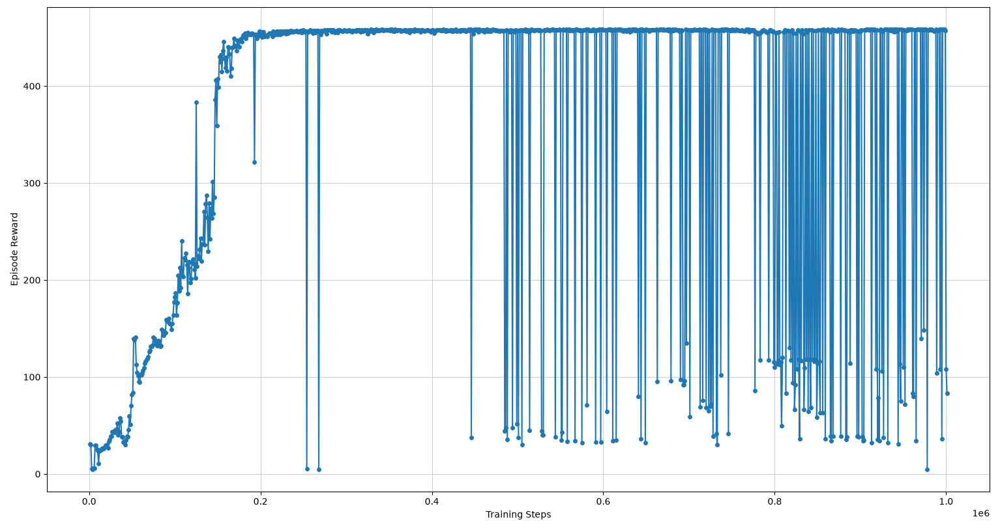
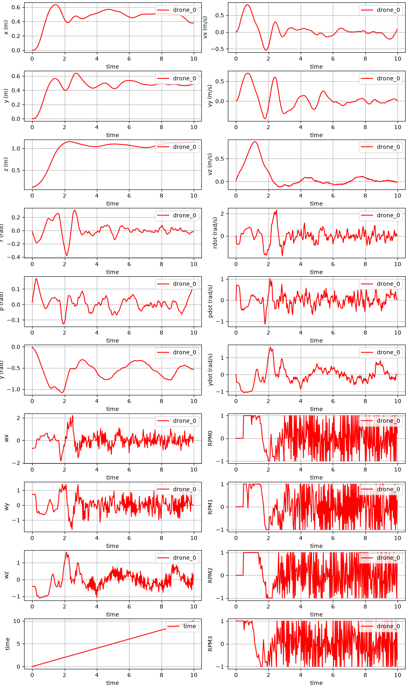
Random Start
-
초기 위치 x, y는 ±0.05m, z는 ±0.02m 변경함
-
Success
-
한계
- Episode마다 초기 State가 달라져, 학습해야 할 state distribution이 넓어졌으나 total timestep이 동일해 학습 난이도가 상대적으로 증가함
| Category | Parameter | Current Value |
|---|---|---|
| Task | Target | (0.5, 0.5, 1.0) |
| Environment | Observation | KIN |
| Action | RPM | |
| Initial Position | Randomized: x,y ±0.05 m / z ±0.02 m | |
| Reward | Function | |
| PPO | Policy | MlpPolicy |
| Learning Rate | 3e-4 | |
n_steps | 2048 | |
| Batch Size | 64 | |
n_epochs | 10 | |
gamma | 0.99 | |
gae_lambda | 0.95 | |
clip_range | 0.2 | |
ent_coef | 0.0 | |
vf_coef | 0.5 | |
| Training | Total Timesteps | 1e6 |
| Eval Frequency | 1000 steps |
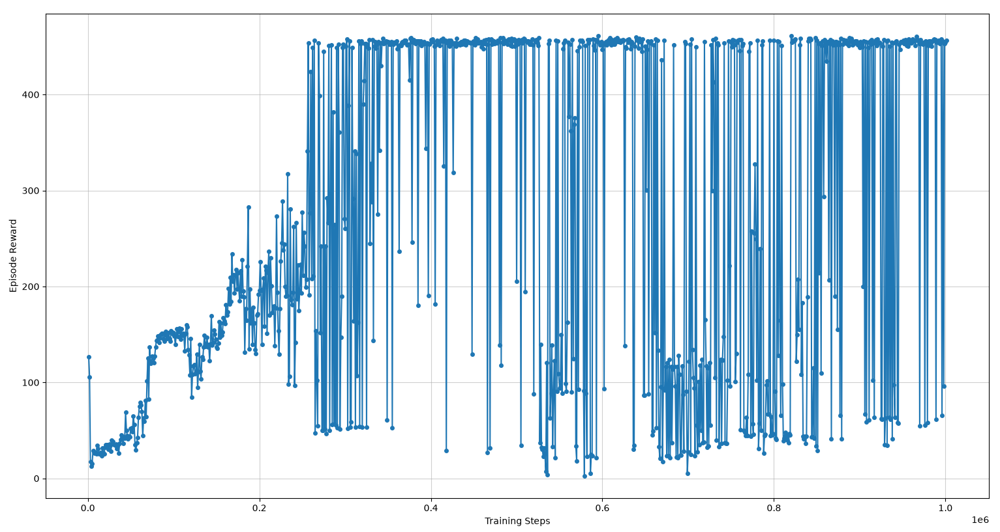
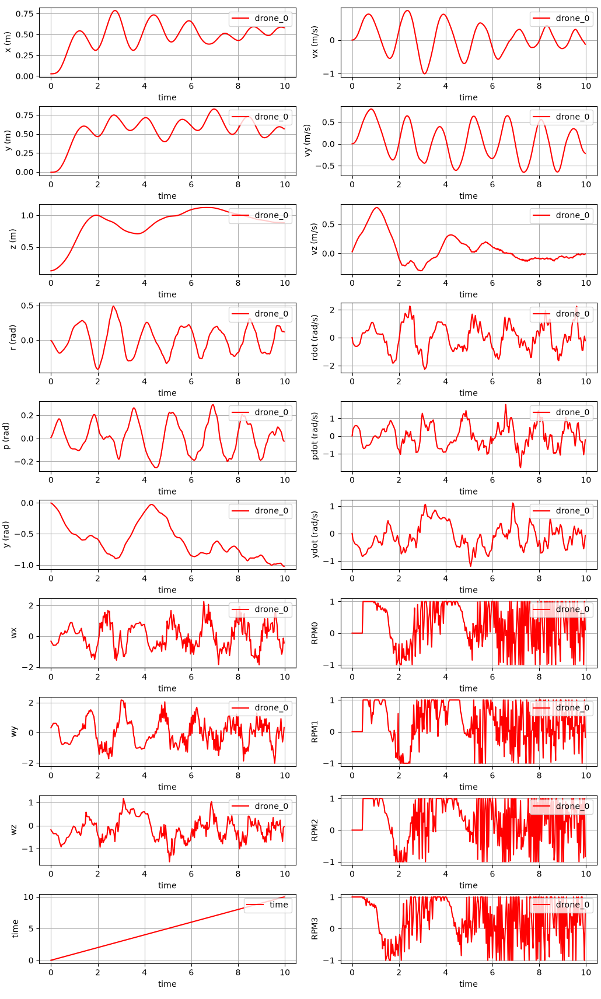
Success-Rate Result
| Experiment | Algo | Nominal | Success | Success Rate | Mean Min Dist | Std Min Dist | Mean Success Step |
|---|---|---|---|---|---|---|---|
| baseline | PPO | FAIL | 25/50 | 50.0% | 0.1502 m | 0.0947 m | 73.2 |
| reward | FAIL | 1/50 | 2.0% | 0.1712 m | 0.0334 m | 53.0 | |
| lr | FAIL | 3/50 | 6.0% | 0.3158 m | 0.1130 m | 64.7 | |
| batch_size | FAIL | 0/50 | 0.0% | 1.0779 m | 0.0866 m | - | |
| clip_range | SUCCESS | 37/50 | 74.0% | 0.1961 m | 0.1892 m | 110.5 | |
| sac | SAC | FAIL | 0/50 | 0.0% | 0.9879 m | 0.0861 m | - |
| goal_obs | PPO | SUCCESS | 47/50 | 94.0% | 0.0959 m | 0.0070 m | 62.1 |
| random_start | SUCCESS | 11/50 | 22.0% | 0.1454 m | 0.0401 m | 104.4 | |
| Success criterion : distance <= 0.10 m | |||||||
| Evaluation episodes: 50 | |||||||
| Evaluation seed : 12345 |
- 결론
- Goal-relative Observation이 가장 큰 성능 개선 효과를 보임
- 해석
- 이번 PointReach Task에선, Agent가 Goal 정보를 충분히 알지 못한 것이 bottleneck이었음
RL에서 어떤 식으로 Agent를 학습시켜야 하는가
-
Agent 학습의 문제가 무엇인지 진단하고, 해당 부분만 수정하는 방식
- 즉, Bottleneck을 찾아 하나씩 제거하는 방식
-
핵심
- Reward 설계
- Policy 개선
-
순서
- Task 정의 (고정)
- Observation Action 설계
- Reward Termination
- Algorithm 선택
- Hyperparameter tuning
- Generalization Robustness
-
표준 흐름
- Task 정의
- Observation Action Reward 설계
- Baseline 학습
- 공통 평가 지표로 성능 확인
- 실패 원인 bottleneck 진단
- 한 요소씩 수정
- ablation 또는 hyperparameter tuning
- 여러 seed로 재검증
- randomization robustness 평가
| 참고 : Optuna